Shroud’s Fragathon
Client: Loaded, Shroud
Year: 2025
Role: Immersive Event Design | Thematic Production | Spatial Design | Merch Design
A cyber-punk themed charity subathon! We developed the event branding, look and feel, and set design. The build consisted of three sets: SHROUD’s Stream Room, The LAN Center, and The Boardgame Room.
Where skill meets heart
Custom Design & Branding
Every design element (from logos to overlays) integrates SHROUD’s brand identity with the white ribbon, serving as a tribute and call to action for cancer awareness.
Sticker Design
Every detail of Fragathon emphasizes that mission! Even the care spent into the custom, hand-personalized invite boxes adorned with stickers in various patterns.
The LAN Center & Boardgame Room
Integrated multi-zone setups for broadcast streaming and tabletop gaming.
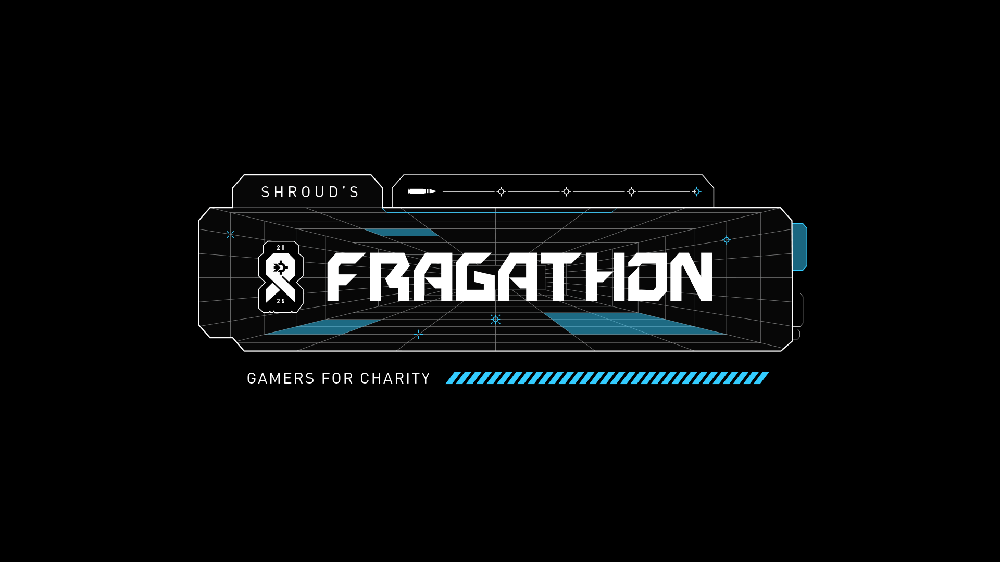
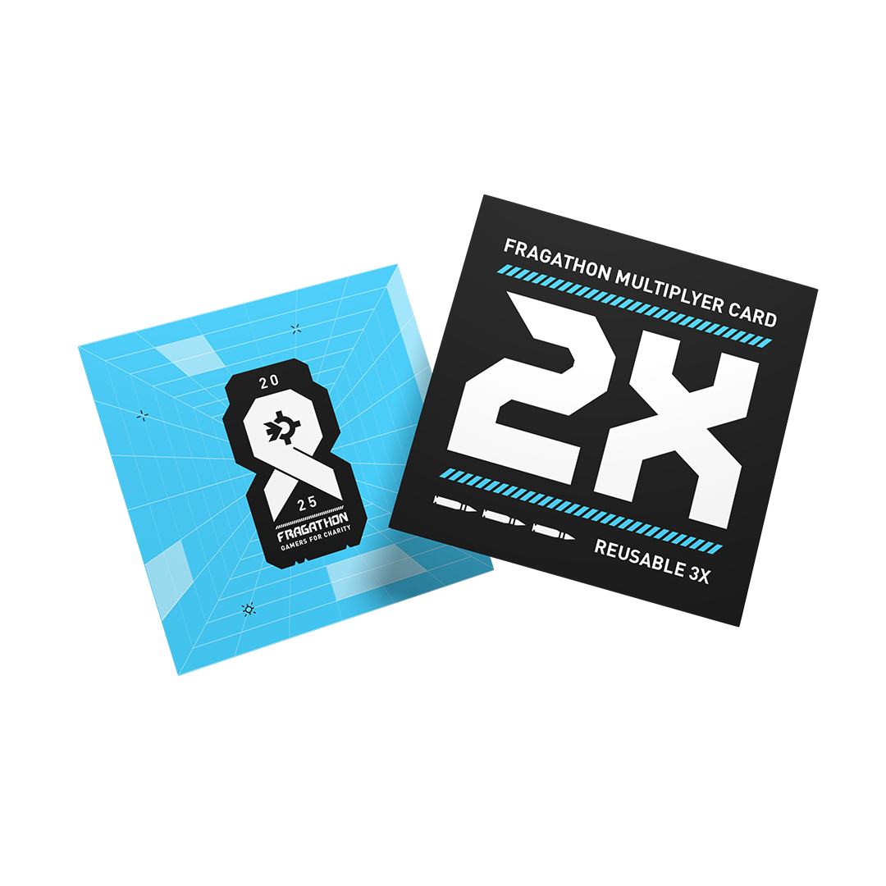
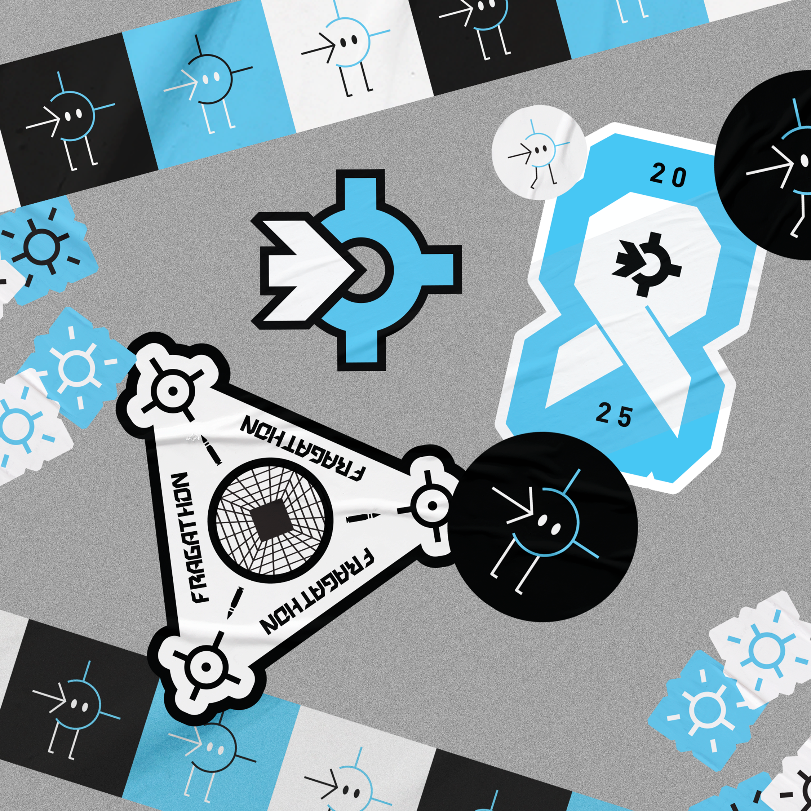
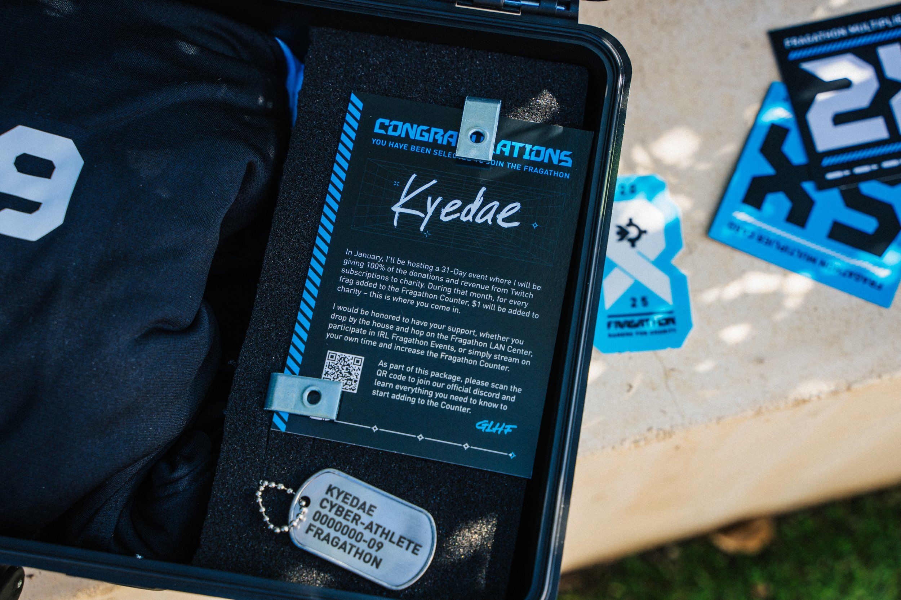
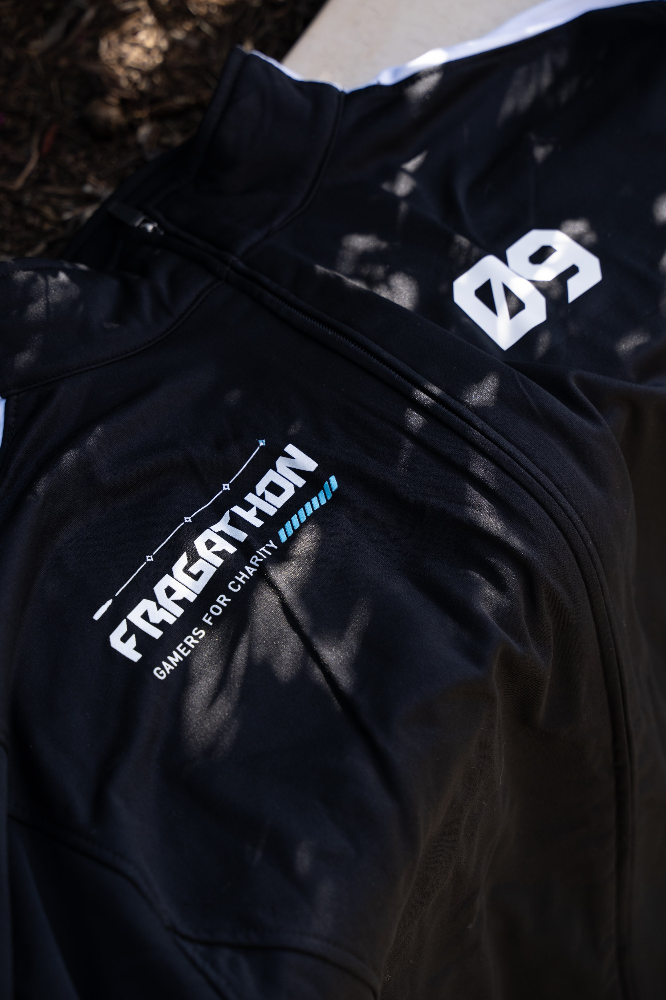
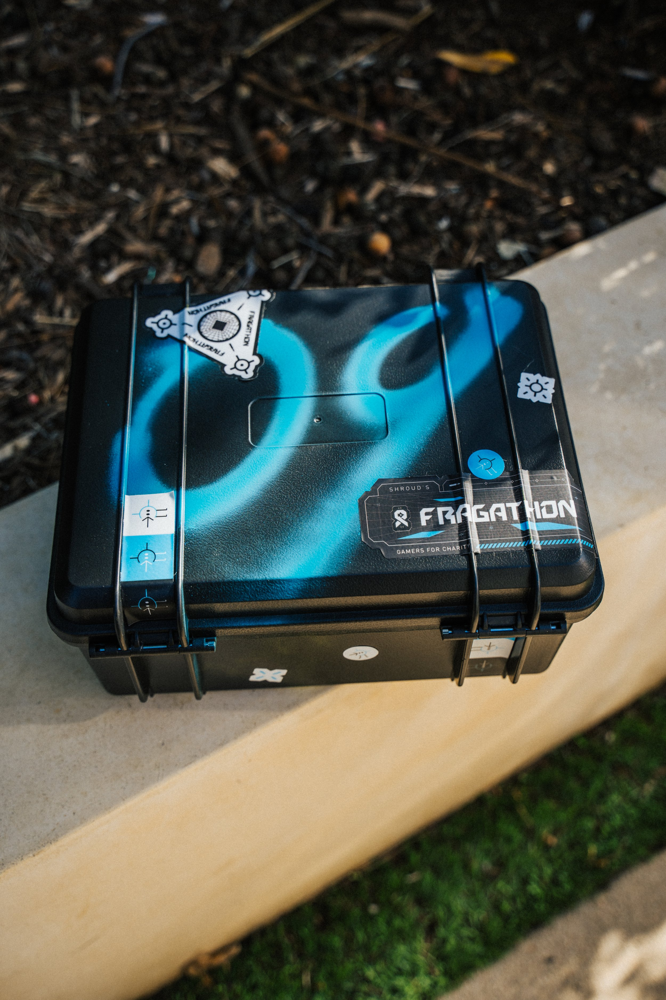
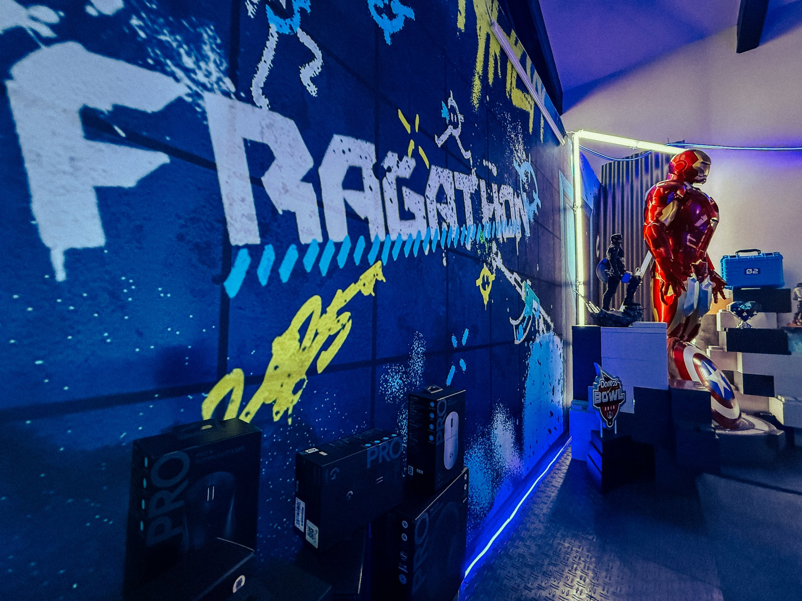
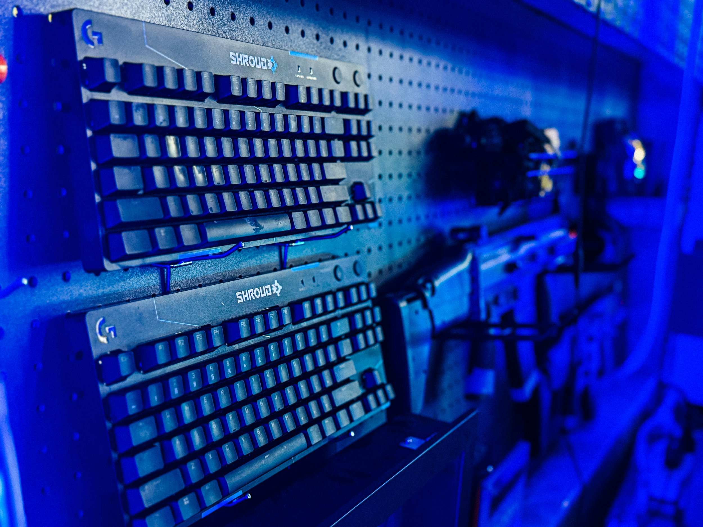
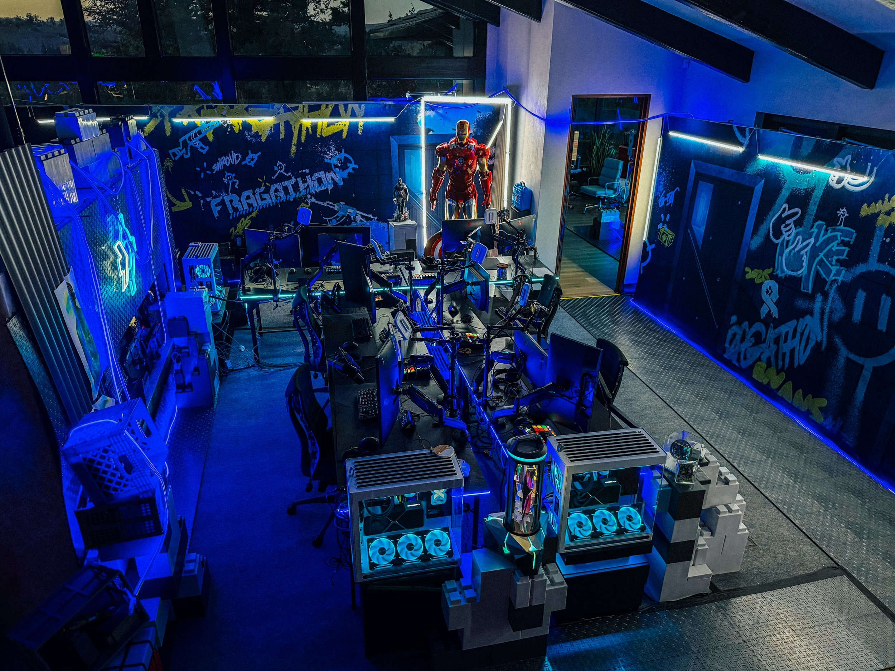
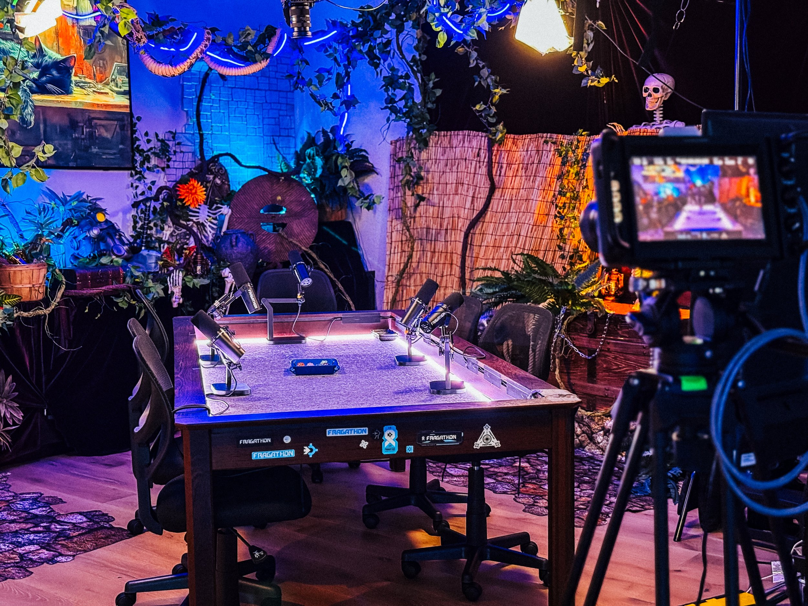
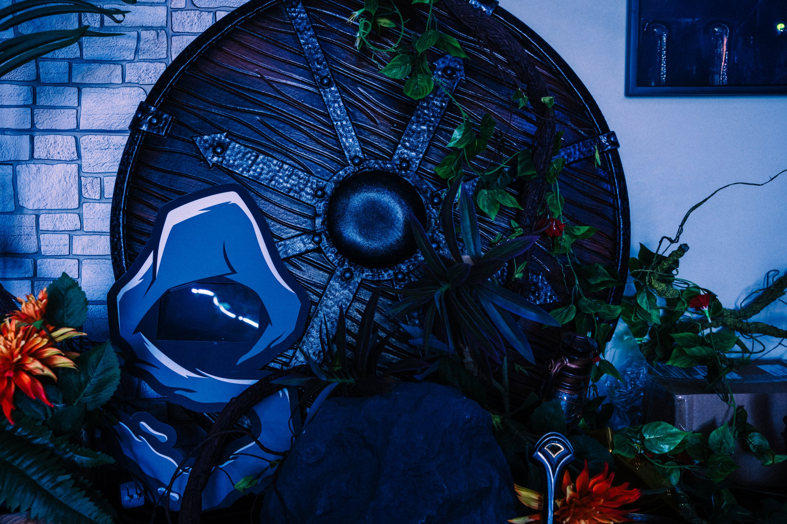
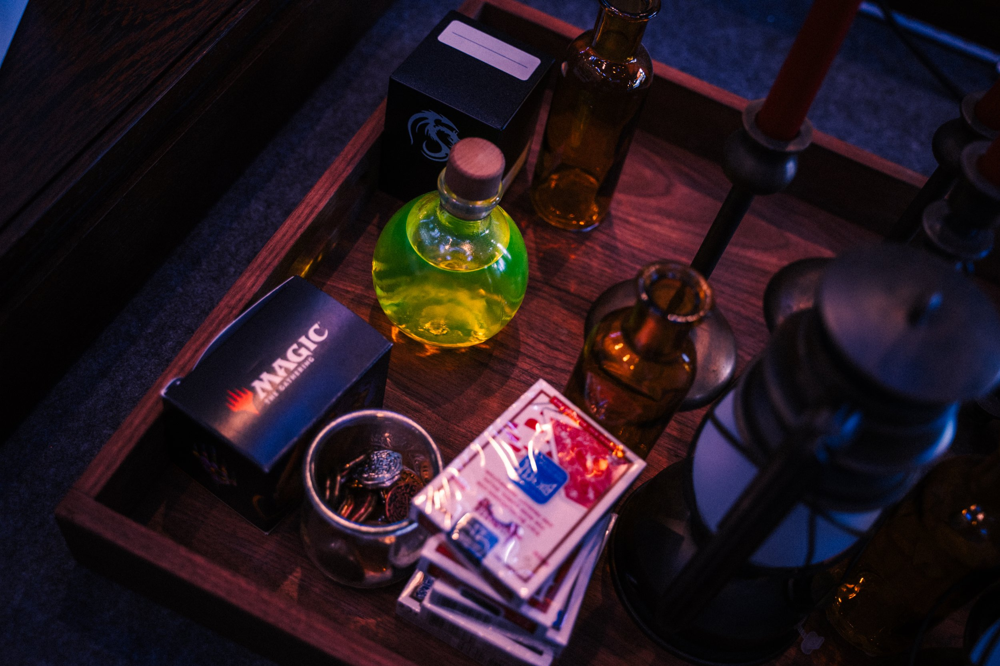
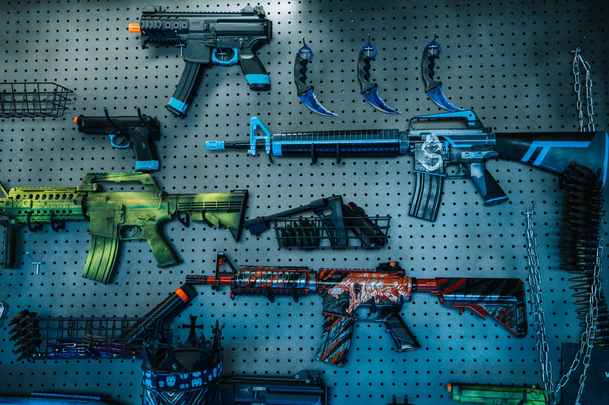
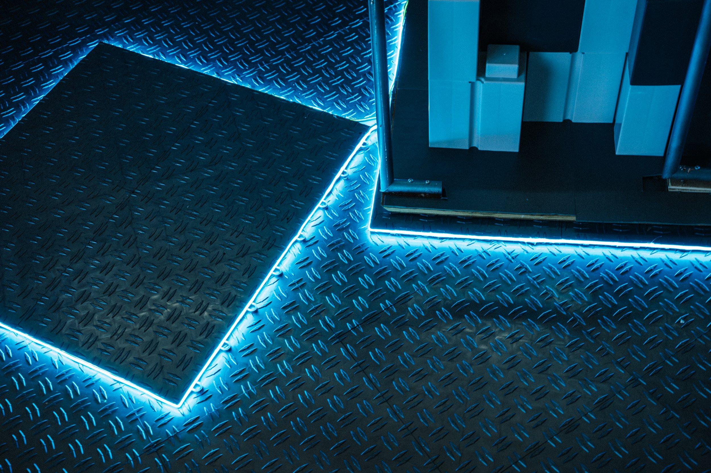
Co-Designed with Alyssa Morrison
Produced in Collaboration with Loaded In House Team, Shroud & Bnans